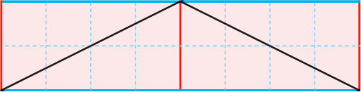

- 물음 1
- 물음 2
- 물음 3
- 물음 4
- 물음 5
-
마름모의 한 대각선을 파란색, 다른 대각선을 빨간색으로 표시해 보세요.
1 ㎝ 예 -
마름모의 한 대각선을 따라 잘라서 넓이를 구하기 쉬운 도형으로 만들어 보세요.
예 -
마름모의 넓이를 어떻게 구하는지 이야기해 보세요.
예마름모를 잘라서 만든 평행사변형의 밑변의 길이와 높이를 곱합니다. -
평행사변형의 넓이를 구하는 방법을 식으로 나타내어 보세요.
마름모의 넓이
＝×한 대각선의 길이÷2다른 대각선의 길이 -
식을 이용하여 마름모의 넓이를 구해 보세요.
예8×4÷2＝16, 16 ㎠입니다.